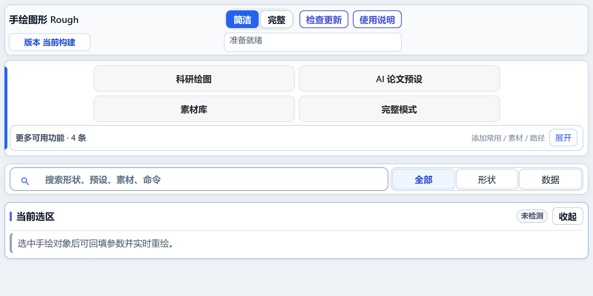
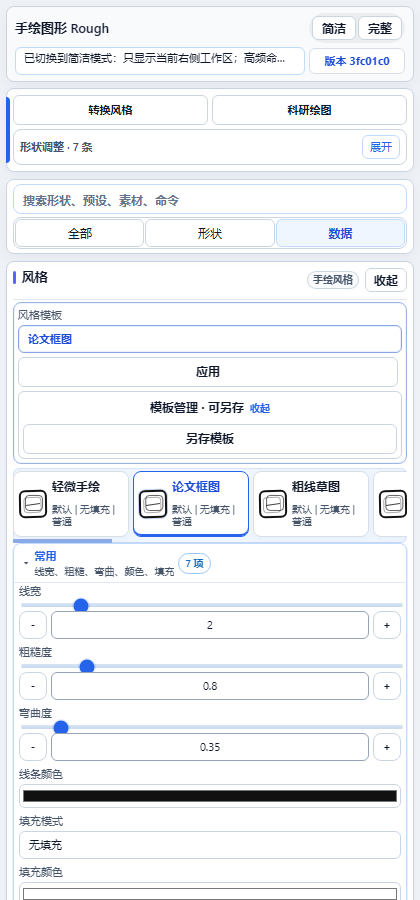
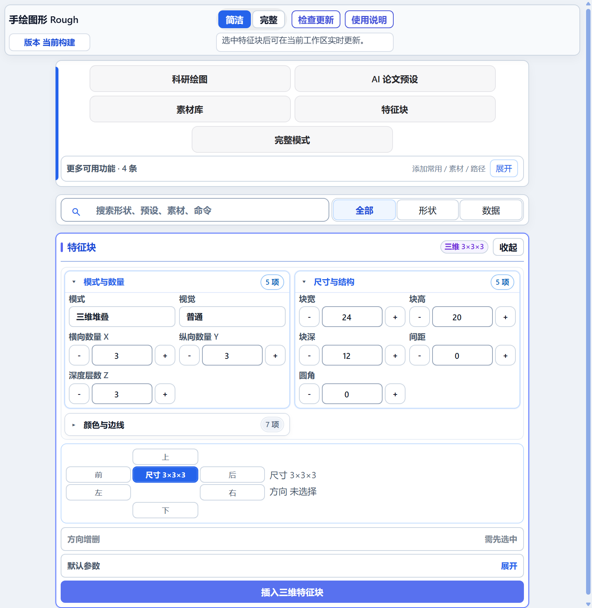
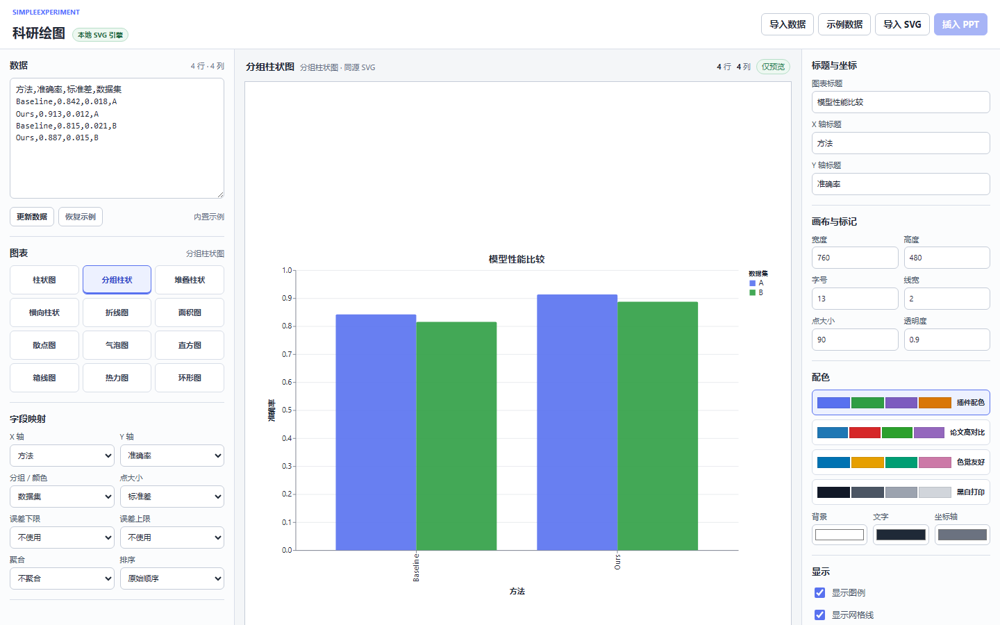

风格模板
轻微手绘、论文框图、粗线草图等预置模板可直接应用。自定义模板支持保存和重命名。
手绘图形 Rough
面向 PowerPoint 的原生可编辑手绘图形、科研绘图、论文预设、特征块、素材和论文图像工作台。

Ribbon 只保留“常用、快速插入、风格、论文与特征、素材”五组。少于 5 项的固定功能直接排列，只有至少 5 项的集合使用下拉菜单；右侧任务窗格负责参数、预览、搜索和完整资源管理。
| 能力 | 首选入口 | 适用时机 |
|---|---|---|
| 插入 202 种原生形状 | Ribbon → 形状图库 | 从零创建手绘流程图、框图、箭头和标注 |
| 快速插入常用形状 | Ribbon → 快速插入 | 重复使用已固定的常用形状 |
| 转换、重绘、检查、选择载体 | Ribbon → 常用 | 处理当前 PowerPoint 选区 |
| 风格、填充、线条、箭头快捷 | Ribbon → 风格 | 快速套用常见视觉参数 |
| 精确风格参数与模板 | 右侧 → 风格 | 调线宽、粗糙度、弯曲度、颜色、填充和来源 |
| 二维与三维特征块 | Ribbon → 论文与特征；右侧精调 | 网络结构图中的特征图、张量和体数据块 |
| 科研图表 | 右侧 → 科研绘图工作区 | 同一 CSV 切换多种预览后插入原生图表；旧导入面板继续支持 JSON、统计结果和文件夹 |
| 论文结构预设 | Ribbon → 论文与特征 → 论文套件 | 快速搭建多模态、医学 AI、Transformer 等框图 |
| 完整论文图片库 | Ribbon → 素材 → 打开论文图片库 | 复用 Zotero 生成的完整图库，进行筛选、高清查看、分享、导入和删除 |
| Zotero 论文图与配色 | 右侧 → 论文图像与配色 | 快速搜索、插入当前参考图，并按单张图取色或保存配色 |
| 素材库、配色库、分享包 | Ribbon → 素材；右侧完整管理 | 保存、插入、搜索、批量选择、导入和分享 |
| 功能搜索与定位 | 右侧顶部搜索 | 不知道入口位置时直接输入“重绘、配色、科研绘图”等 |
右侧完整形状浏览可把常用形状固定到快速插入栏。Ribbon 可直接插入固定形状，也可从管理菜单移除固定项；移除不会删除幻灯片中的已有对象。
选中普通对象或手绘组后，简洁模式自动进入风格工作区。模板用于整组参数，手动改任一参数后会退出模板选中态，避免误以为仍在使用完整模板。

轻微手绘、论文框图、粗线草图等预置模板可直接应用。自定义模板支持保存和重命名。
线宽、粗糙度、弯曲度、随机种子、普通边界、二层或三层嵌套、嵌套错位方向。
无填充、纯色、白底、涂刷、斜线、交叉、点状、短划和锯齿等；权威填充仍由原生闭合边界承载。
实线、虚线、点线、点划线，细线到粗线，以及无箭头、单向、双向和多种箭头头型。选中“手绘箭头”后，“线条”参数组会显示三角形长度和宽度滑杆，可分别控制箭头沿线长度与垂直宽度。
可分别选择 Rough.js、Excalidraw、draw.io、D2、tldraw 等边界或填充来源，再继续精调。
选中手绘组时，右侧参数和 Ribbon 风格、填充、线条快捷项都会立即重绘当前选区，不会只影响后续插入。若先用 PowerPoint 调整点改变圆角或箭头载体几何，请点击 Ribbon“重绘选区”重新生成边界。
特征块适合表示卷积特征图、图像 Patch、张量、体数据、注意力图和中间层表示。Ribbon 提供高频预设，右侧提供完整参数和方向编辑。

科研绘图把实验聚合结果转换为 PowerPoint 原生线、形状、文字和表格。独立工作区使用本地 Papa Parse 读取 CSV，并使用本地 Chart.js 切换预览；预览不会作为图片插入。旧任务窗格导入面板继续处理统计 JSON、论文表格和自动化结果。

statistics.json 和论文结果表 CSV。论文套件用于快速生成可编辑框图骨架。Ribbon 放高频一键预设，右侧提供搜索、分类、收藏和大面积预览。
预设插入的是 PowerPoint 原生组，文字、颜色、尺寸和连线均可继续修改。预览仅用于选择，不会把预览图作为最终对象插入。
zotero.sqlite。插件可作为本机科研绘图终端接收 SIMPLEEXPERIMENT 请求，并兼容旧版 ZLK Cluster 协议。联动只监听本机回环地址，并使用本机令牌鉴权。
POST /api/zlk-cluster/plot 提交规范化绘图任务。